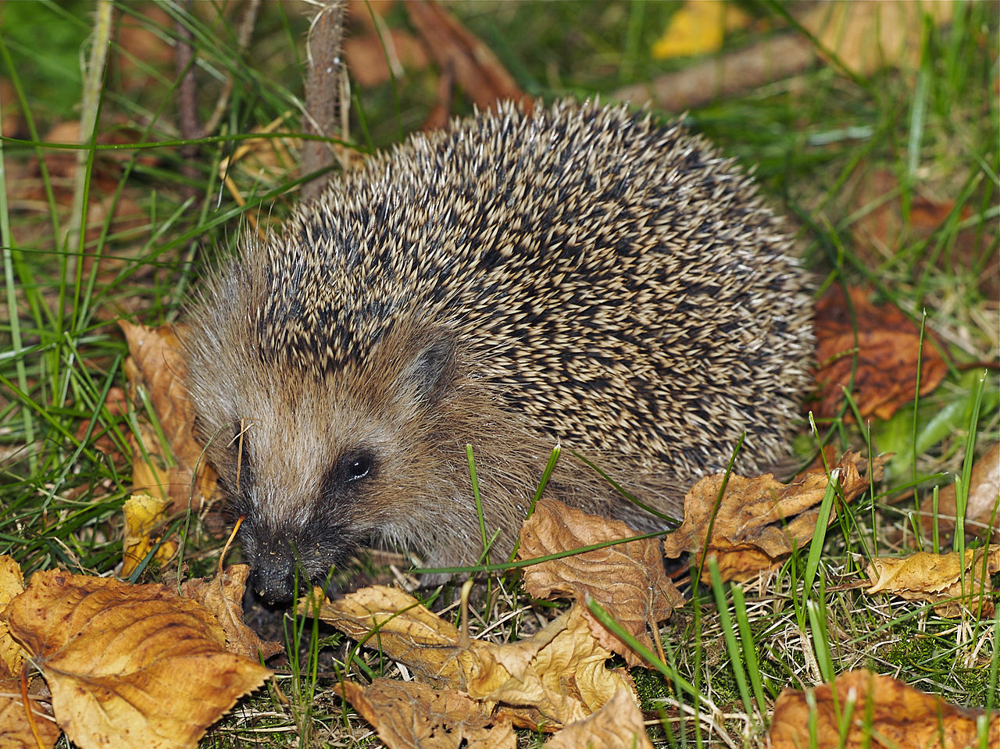
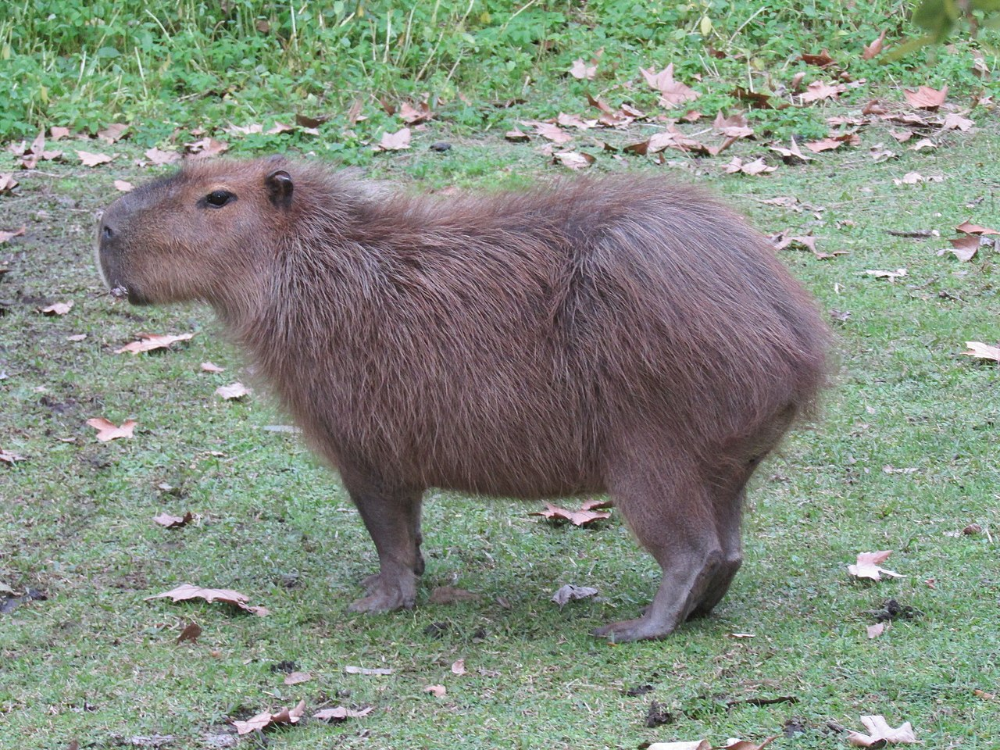
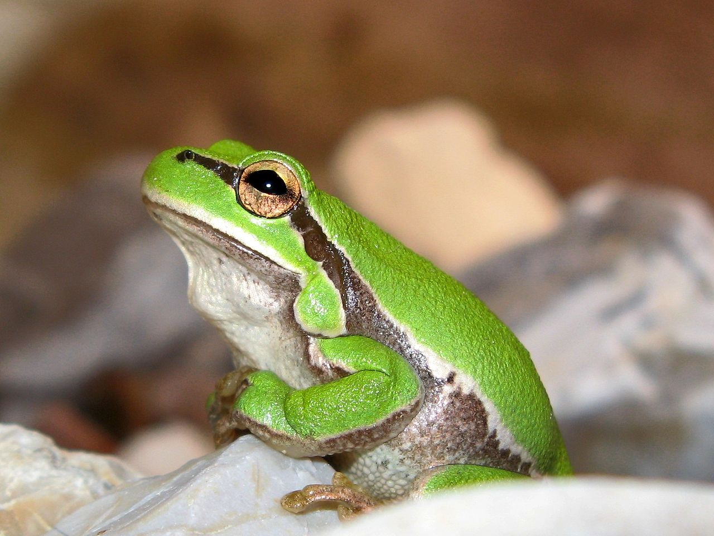

Европейский Ёж
Европейский ёж (Erinaceus europaeus) —
это небольшое млекопитающее,
широко распространённое в Европе и некоторых частях Азии.
Он имеет характерные иглы на спине (модифицированные волосы)
которые служат защитой от хищников. Ёж ведет ночной образ жизни,
активно охотится в сумерки и ночью. В рационе ежа преобладают насекомые,
черви, моллюски, но он может также питаться мелкими позвоночными и падалью.
Ёжи впадают в спячку на зиму, чтобы пережить холодные месяцы,
замедляя свой метаболизм. Они предпочитают жить в лесах, парках и садах,
часто обустраивая себе укрытия из листвы и веток.

Капибара
Капибара (Hydrochoerus hydrochaeris) — это самое
крупное из современных грызунов. Она обитает в Южной Америке,
преимущественно вблизи водоёмов. Внешне капибара напоминает большую морскую свинку:
у неё массивное, вытянутое тело длиной около 1-1,3 метра,
короткие конечности, коричнево-рыжий окрас и крупная голова.
Капибары ведут полуводный образ жизни и отлично плавают. Они часто проводят
время в воде, чтобы избежать хищников и охладиться в жару.
Их рацион состоит в основном из травы и водных растений.
Капибары живут стадами, обычно от 10 до 20 особей, и являются социальными животными.
Они миролюбивы, что делает их популярными в зоопарках и даже иногда как домашних питомцев.

Древесная лягушка
Древесные лягушки (семейство Hylidae) — это небольшие лягушки, которые
обитают на деревьях или кустарниках в различных регионах мира,
включая Северную и Южную Америку, Европу и Азию. Эти амфибии известны
своей способностью лазать по вертикальным поверхностям благодаря специальным
подушечкам на пальцах, которые выделяют клейкое вещество для лучшего сцепления.
Большинство древесных лягушек имеют зелёную, коричневую или серую окраску,
которая помогает им сливаться с окружающей средой, защищаясь от хищников.
У некоторых видов есть способность изменять цвет в зависимости от условий.
Рацион древесных лягушек состоит из насекомых, мелких беспозвоночных и иногда
других небольших животных. Они ведут ночной образ жизни и часто издают
громкие звуки для привлечения партнёров в брачный сезон.